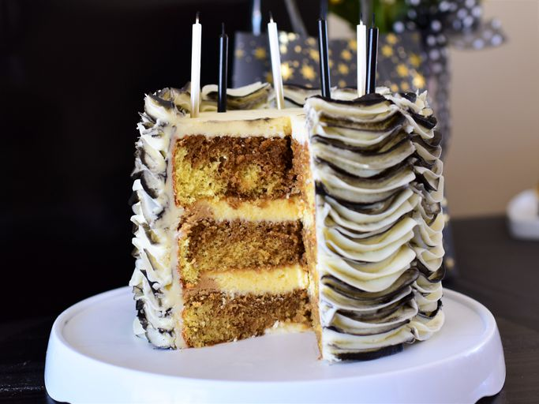

I like cake

Description
This tiramisu cake tastes just like the Italian dessert but in cake form. It's easy to make ahead and wonderful for a get-together or special occasion. Using a boxed cake mix as a base is a real time-saver!
Ingredients
- For the cake: white cake mix, water, egg whites, vegetable oil, and instant coffee powder
- For the coffee syrup: coffee and coffee-flavored liqueur
- For the filling: mascarpone cheese, confectioners’ sugar, and coffee-flavored liqueur
- Garnishes: unsweetened cocoa powder and semisweet chocolate
Steps
- Make the cake batter and pour ⅔ of the batter into two prepared cake pans.
- Stir instant coffee into the remaining batter and pour it into the remaining pan.
- Bake the cake layers and let them cool.
- Make the filling. Make the frosting.
- Assemble the tiramisu cake according to the detailed instructions in Step 7. Garnish the cake and chill before serving.